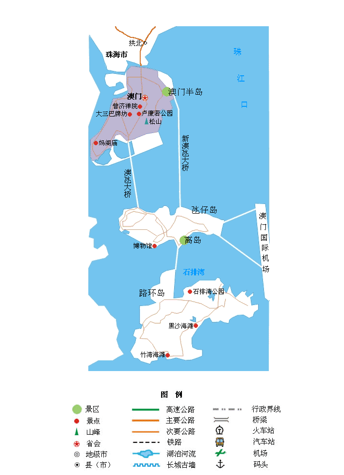

| | | | | |
| - | - | - | - | - |
|<b>别名</b>|妈港、濠江、梳打埠、马交、濠海、濠镜、濠镜澳、香山澳等||<b>著名景点</b>|澳门历史城区、大三巴牌坊、观光塔、葡京赌场、妈阁庙、谭公庙等|
|<b>行政区类别</b>|特别行政区||<b>机 场</b>|澳门国际机场|
|<b>所属地区</b>|华南地区||<b>火车站</b>|-|
|<b>下辖地区</b>|7个堂区||<b>车牌代码</b>|粤Z（进入内地）|
|<b>电话区号</b>|+853||<b>GDP</b>|504亿美元（2017年，国际汇率）|
|<b>邮政区码</b>|999078||<b>人均GDP</b>|80893美元（2017年，国际汇率）|
|<b>地理位置</b>|珠江三角洲西南部、珠江口西岸||<b>城市美誉</b>|东方赌城、海上花园|
|<b>面 积</b>|32.8平方公里（海域面积85平方公里）||<b>货 币</b>|人民币、澳门币|
|<b>人 口</b>|65.6万（截至2018年3月）||<b>回归时间</b>|1999年12月20日|
|<b>方 言</b>|粤语||<b>官方语言</b>|中文（含粤语、普通话）、葡语|
|<b>气候条件</b>|亚热带季风气候||<b>地区代码</b>|MAC|
|-|-||<b>官方语言</b>|中文（含粤语、普通话）、葡语|
|-|-||<b>政治体制</b>|行政主导的代议民主制|
|-|-||<b>法律体系</b>|大陆法系|
|-|-||<b>行政长官</b>|崔世安|
|-|-||<b>著名高校</b>|澳门大学、澳门城市大学等|
|-|-||<b>行政区划代码</b>|820000|
|-|-||<b>域 名</b>|.mo|
| <b>澳门旅游攻略</b> | <b>澳门旅游必去景点</b> | <b>澳门旅游注意事项</b> | <b>港澳台</b> | <b>其它</b> |
| - | - | - | - | - |
| <a href="javascript:;" onclick="strategy(this);">澳门旅游攻略</a> | <a href="javascript:;" onclick="scene(this);">威尼斯人度假村</a> | <a href="javascript:;" onclick="notes(this);">澳门旅游注意事项</a> | <a href="javascript:;" onclick="tips(this);">港澳台旅游小贴士</a> | - |
| - | <a href="javascript:;" onclick="scene(this);">大三巴牌坊</a> | - | <a href="introduce.html">港澳台简介</a> | - |
| - | <a href="javascript:;" onclick="scene(this);">澳门旅游塔</a> | - | <a href="permit.html">港澳台通行证</a> | - |
| - | <a href="javascript:;" onclick="scene(this);">东望洋山</a> | - |-|-|
| - | <a href="javascript:;" onclick="scene(this);">渔人码头</a> | -|-|-|
| - | <a href="javascript:;" onclick="scene(this);">妈祖文化村</a> | -|-|-|
| - | <a href="javascript:;" onclick="scene(this);">议事亭前地</a> | -|-|-|
| - | <a href="javascript:;" onclick="scene(this);">龙环葡韵</a> | -|-|-|
| - | <a href="javascript:;" onclick="scene(this);">新濠天地</a> | -|-|-|
| - | <a href="javascript:;" onclick="scene(this);">新马路</a> | -|-|-|
## <i class="fa fa-file-text-o"></i>&nbsp;目录（Table of Contents）
+ [I. 总路线图（暂无）](#one)
+ [II. 景点](#two)
+ [III. 路线规划（暂无）](#three)
<h2 id="two"><i class="fa fa-star-o"></i>&nbsp;景点</h2>
